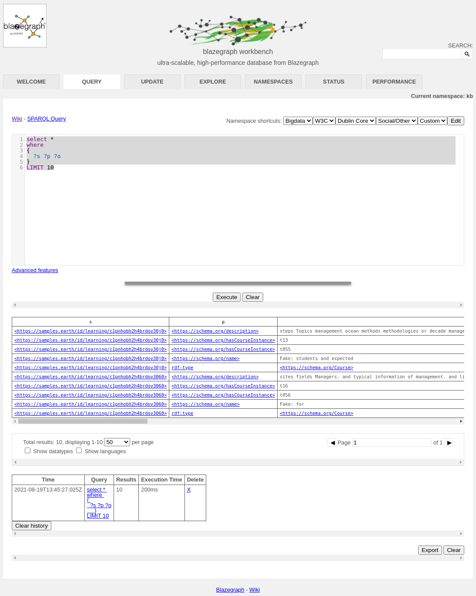

Gleaner CLI Docker
Contents
Gleaner CLI Docker#
About#
This is a new approach for quick starts with Gleaner. It is a script that exposes a containerized version of Gleaner as a CLI interface.
You can use the -init flag to pull down all the support files you need including the Docker Compose file for setting up the object store, a triplestore and the support for headless indexing.
Prerequisites#
You need Docker installed. Later, to work with the results and load them into a triplestore, you will also need an S3 compatible client. We will use the Minio client, mc, for this.
Steps#
Download the script gleanerDocker.sh from https://github.com/earthcubearchitecture-project418/gleaner/tree/master/docs/cliDocker You may need to make it run-able with
curl -O https://raw.githubusercontent.com/earthcubearchitecture-project418/gleaner/master/docs/cliDocker/gleanerDocker.sh
chmod 755 gleanerDocker.sh
Next you can run the script with the -init flag to pull down all the support files you need.
./gleanerDocker.sh -init
This will also download the needed docker image and the support files. Your directory should look like this now:
fils@ubuntu:~/clidocker# ls -lt
total 1356
-rw-r--r-- 1 fils fils 1281 Aug 15 14:07 gleaner-IS.yml
-rw-r--r-- 1 fils fils 290 Aug 15 14:07 setenvIS.sh
-rw-r--r-- 1 fils fils 1266 Aug 15 14:07 demo.yaml
-rw-r--r-- 1 fils fils 1371350 Aug 15 14:07 schemaorg-current-https.jsonld
-rwxr-xr-x 1 fils fils 1852 Aug 15 14:06 gleanerDocker.sh
Let’s see if we can setup our support infrastructure for Gleaner. The file gleaner-IS.yml is a docker compose file that will set up the object store, and a triplestore.
To do this we need to set up a few environment variables. To do this we can leverage the setenvIS.sh script. This script will set up the environment we need. Note you can also use a .env file or other approaches. You can references the Environment variables in Compose documentation.
root@ubuntu:~/clidocker# source setenvIS.sh
root@ubuntu:~/clidocker# docker-compose -f gleaner-IS.yml up -d
Creating network "clidocker_traefik_default" with the default driver
Creating clidocker_triplestore_1 ... done
Creating clidocker_s3system_1 ... done
Creating clidocker_headless_1 ... done
Note: In a fresh run all the images will be pulled down. This may take a while.
In the end, you should be able to see these images running:
root@ubuntu:~/clidocker# docker ps
CONTAINER ID IMAGE COMMAND CREATED STATUS PORTS NAMES
a26f7c945479 nawer/blazegraph "docker-entrypoint.s…" About a minute ago Up About a minute 0.0.0.0:9999->9999/tcp clidocker_triplestore_1
f3a4197c42be minio/minio:latest "/usr/bin/docker-ent…" About a minute ago Up About a minute 0.0.0.0:9000->9000/tcp, 0.0.0.0:54321->54321/tcp clidocker_s3system_1
062f029462b1 chromedp/headless-shell:latest "/headless-shell/hea…" About a minute ago Up About a minute 0.0.0.0:9222->9222/tcp
At this point we should be able to do a run. During the init process a working config file was downloaded.
Note: This config file will change… it’s pointing to an OIH partner and I will not do that for the release. I have a demo site I will use.
Next we need to setup our object for Gleaner. Gleaner itself can do this task so we will use
root@ubuntu:~/clidocker# ./gleanerDocker.sh -setup -cfg demo
main.go:35: EarthCube Gleaner
main.go:110: Setting up buckets
check.go:58: Gleaner Bucket gleaner not found, generating
main.go:117: Buckets generated. Object store should be ready for runs
Note: Here is where we go off the rails. The config file uses 0.0.0.0 as the location and this is not working. You need to edit the config file with the “real” IP of the host machine. In many cases this is 192.168.122.77. This is obviously still a local network IP but it does work. I am still investigating this issue.
We can now do a run with the example template file.
Note: Best to delete the “sitegraph” node, I will do that soon. It should work, but is currently slow and gives little feedback
If everything goes well, you should see something like the following:
root@ubuntu:~/clidocker# ./gleanerDocker.sh -cfg demo
main.go:35: EarthCube Gleaner
main.go:122: Validating access to object store
check.go:39: Validated access to object store: gleaner.
org.go:156: Building organization graph (nq)
org.go:163: {samplesearth https://samples.earth/sitemap.xml false https://www.re3data.org/repository/samplesearth Samples Earth (DEMO Site) https://samples.earth}
main.go:154: Sitegraph(s) processed
summoner.go:16: Summoner start time: 2021-08-15 14:34:08.907152656 +0000 UTC m=+0.067250623
resources.go:74: samplesearth : 202
100% |██████████████████████████████████████████████████████████████████████████████████████████████████████████████████████████████████████████████████████████████████████████████████| (202/202, 20 it/s)
summoner.go:34: Summoner end time: 2021-08-15 14:34:20.36804137 +0000 UTC m=+11.528139340
summoner.go:35: Summoner run time: 0.191015
webfeed.go:37: 1758
millers.go:26: Miller start time: 2021-08-15 14:34:20.368063453 +0000 UTC m=+11.528161421
millers.go:40: Adding bucket to milling list: summoned/samplesearth
millers.go:51: Adding bucket to prov building list: prov/samplesearth
100% |█████████████████████████████████████████████████████████████████████████████████████████████████████████████████████████████████████████████████████████████████████████████████| (202/202, 236 it/s)
graphng.go:77: Assembling result graph for prefix: summoned/samplesearth to: milled/samplesearth
graphng.go:78: Result graph will be at: results/runX/samplesearth_graph.nq
pipecopy.go:16: Start pipe reader / writer sequence
graphng.go:84: Pipe copy for graph done
millers.go:80: Miller end time: 2021-08-15 14:34:21.84702814 +0000 UTC m=+13.007126109
millers.go:81: Miller run time: 0.024649
Working with results#
If all has gone well, at this point you have downloaded the JSON-LD documents into Minio or some other object store.Next we will install a client that we can use to work with these objects.
Note, there is a web interface exposed on the port mapped in the Docker compose file. In the case of these demo that is 9000. You can access it at http://localhost:9000/ with the credentials set in the environment variable file.
However, to work with these objects it would be better to use a command line tool, like mc. The Minio Client, can be installed following their Minio Client Quickstate Guide. Be sure to place it somewhere where it can be seen from the command line, ie, make sure it is in your PATH variable.
If you are on Linux this might look something like:
wget https://dl.min.io/client/mc/release/linux-amd64/mc
chmod +x mc
./mc --help
There is also a Minio Client Docker image that you can use as well but it will be more difficult to use with the following scripts due to container isolation.
To man an entry in the mc config use:
mc alias set oih http://localhost:9000 worldsbestaccesskey worldsbestsecretkey
We should now be able to list our object store. We have set it up using the alias oih.
user@ubuntu:~/clidocker# mc ls oih
[2021-08-15 14:31:20 UTC] 0B gleaner/
user@ubuntu:~/clidocker# mc ls oih/gleaner
[2021-08-19 13:36:04 UTC] 0B milled/
[2021-08-19 13:36:04 UTC] 0B orgs/
[2021-08-19 13:36:04 UTC] 0B prov/
[2021-08-19 13:36:04 UTC] 0B results/
[2021-08-19 13:36:04 UTC] 0B summoned/
You can explore mc and see how to copy and work with the object store.
Loading to the triplestore#
As part of our Docker compose file we also spun up a triplestore. Let’s use that now.
Now Download the minio2blaze.sh script.
curl -O https://raw.githubusercontent.com/earthcubearchitecture-project418/gleaner/master/scripts/minio2blaze.sh
chmod 755 minio2blaze.sh
The content we need to load into the triplestore needs to be in RDF for Blazegraph. We also need to tell the triplestore how we have encoded that RDF. If look in the object store at
mc ls oih/gleaner/milled
[2021-08-19 13:26:52 UTC] 0B samplesearth/
We should see a bucket that is holding the RDF data converted from the JSON-LD. Let’s use this in our test. We can pass this path to the minio2blaze.sh script. This script will go looking for the mc command we installed above, so be sure it is in a PATH location that script can see.
./minio2blaze.sh oih/gleaner/milled/samplesearth
... lots of results removed
If all has gone well, we should have RDF in the triplestore. We started our triplestore as part of the docker-compose.yml file. You can visit the triplestore at http://localhost:9999/blazegraph/#splash
Note, you may have to try other addresses other than localhost if your networking is a bit different with Docker. For me, I had to use a real local IP address for my network, you might also try 0.0.0.0.
Hopefully you will see something like the following.

We loaded into the default kb namespace, so we should be good there. We can see that is listed as the active namespace at the Current Namespace: kb report.
Let’s try a simple SPARQL query. Click on the Query tab to get to the query user interfaced. We can use something like:
select *
where
{
?s ?p ?o
}
LIMIT 10
A very simple SPARQL to give us the first 10 results from the triplestore. If all has gone well, we should see something like:

You can explore more about SPARQL and the wide range of queries you can do with it at the W3C SPARQL 1.1 Query Language reference.
Conclusion#
We have attempted here to give a quick introduction to the use of Gleaner in a Docker environment. This is a very simple example, but it should give you an idea of the approach used. This approach can then be combined with other approaches documented to establish a more production oriented implementation. Most of this documentation will be located at the Gleaner.io GitHub repository and Gleaner repository.
Note: The plan is to merge the Gleaner.io GitHub repository into the first.